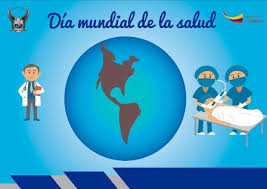

Dia Mundial de la Salud 7 de abril
INFOGRAFIA
Información sobre el dia Mundial de la Salud

El dia Mundial de la Salud, que se celebra el 7 de abril, este año marca el final de las celebraciones del 70 aniversario de la organización Mundial de la salud.Estas celebraciones se han enfocado en torno a la salud universal, bajo el lema "Salud universal, para todos y todas, en todas partes".
La OMS ofrece:
- Un entorno laboral dinámico e internacional, con una plantilla multicultural.
- Oportunidades de desarrollo profesional y una remuneración competitiva.
- Ofrece al personal la ocasión de adquirir experiencia en diferentes países.
- 2012:"La buena salud añade vida a los años"
- 2013:"Controlese la tensión arterial"
- 2014:"Pequeñas picaduras, grandes amenazas"
- 2015:"Inocuidad de los alimentos"
- 2016:"Vence a la diabetes"
-
1.-Cuando se celebra y por qué?
La OMS por su sigla en ingles se creo el 7 de Abril de 1948 en Ginebra.En esa misma oportunidad la Asamblea de las Naciones Unidas determino que el 7 de abrilse celebraria el dia Mundial de la Salud.
-
2.-Que se trata de conseguir con la campaña?
Se trata de conseguir grandes oportunidades para aumentar la concienciación y los conocimientos sobre los problemas de salud y para movilizar apoyos en todos los ámbitos.
-
3.-Qué hace la OMS?
La OMS fue creada por iniciativa del Consejo Economico y Social.Se encarga de la gestión de politicas sanitarias a escala global.
-
4.-Cobertura Sanitaria Universal
La (CSU) implica que todas las personas y comunidades reciban los servicios de salud que necesitan sin tener que pasar penurias financieras para pagarlos.
-
5.-Qué es lo que NO incluye la cobertura sanitaria universal
La CSU no implica la cobertura gratuita de todas las intervenciones sanitarias posibles, independientemente de su costo.


 1
1 2
2 3
3 4
4 5
5